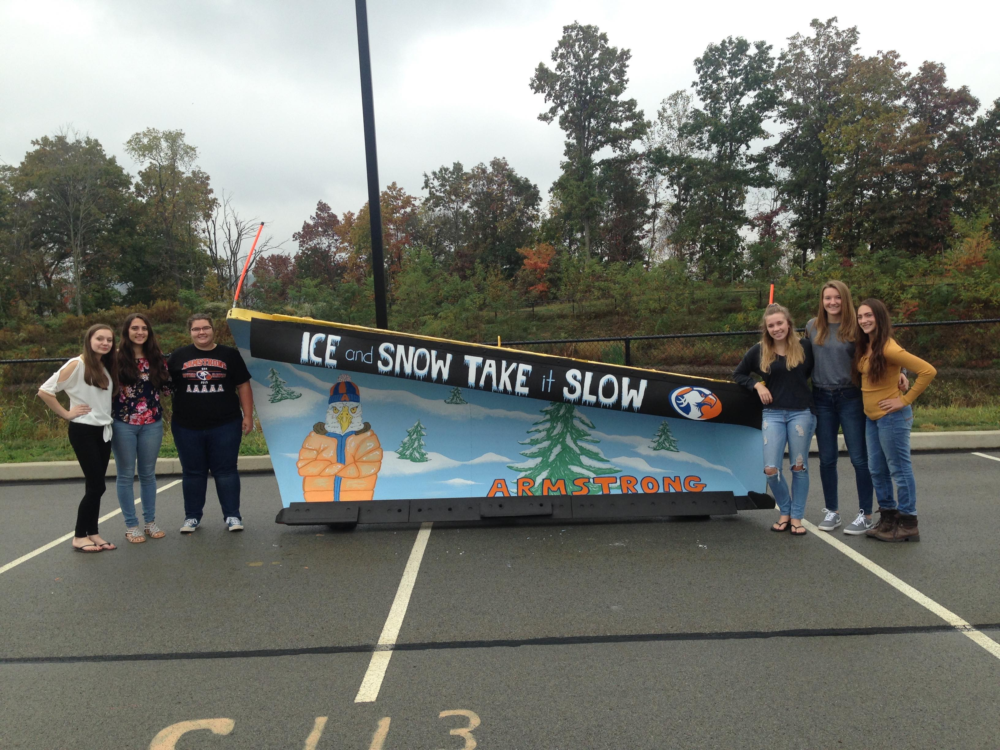

Pennsylvania Free Enterprise Week (PFEW) is a one-of-a-kind summer program that offers in-coming high school juniors and seniors a unique and challenging opportunity to see what it is like to run their own business.
As a participants I was able to make up an "imaginary" management team where I learned first-hand about the Free Enterprise System. The task was to turn my group’s failing company into a financial success! I was in charge of creating marketing strategies for our shoe company, Premier. At this summer program I had to make all of the decisions that are demanded of real life company executives. It was not all work, however, because I made life-long friends and lasting memories.
For two years I was apart of TV Production, both the class and the club. Within the subject I advanced in writing, filming, editing, communication and all forms of production. During the school years, I took part in Education Today which is a regional cable program that highlights positive stories from the Armstrong School District and its community, that began in 2005. The program is produced purely by students as is the other show which is on live stream as a newscast, Talon Talk. Talon talk is a student interest broadcast. As well as those shows, I also got to produce my own creative ideas such as “AHS Unhinged,” which is an idea I based off of Animal Planet and turned the show into a recurring segment about students from an animalistic perspective.
Penndot Snowplow

During my senior year I was involved in a state wide art project. My art teacher chose me to be in a group of six people in my entire school to compete together in a painting competition hosted by Penndot. The competition was part of a community outreach program. The snowplow painting was a contest where schools are asked to paint a winter safety theme, weather motif or a school mascot for their program. The overall contest theme is “Ice and Snow, Take it Slow.” PennDOT, with this competition, was hoping to spread awareness about driving safely. My teacher chose the other few students and I because she saw how hard we all worked together and on our own. This art club was put together at the end of my junior year, when we started on the design, even though we only got the plow the second week of our last school year. The other girls and I completed the project on October 5th, and we had been going out during seminars, study halls and whenever they could leave class. A panel of judges will select a snowplow for “Best in Show,” and on PennDOT’s facebook page the community can vote for “fan favorites.”